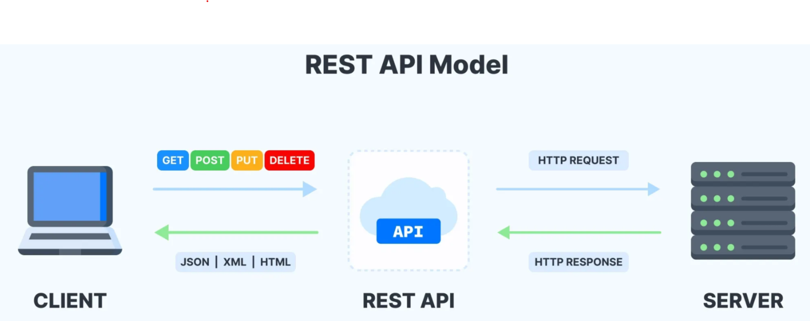
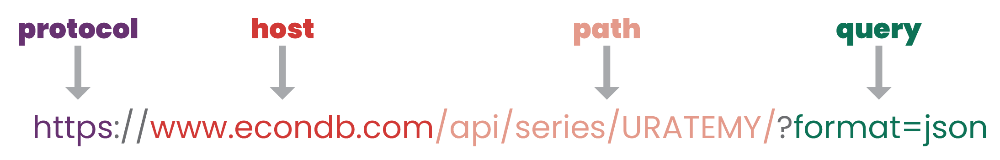

Pinellas County Division of Environmental Management
August 26, 2025

Making a request to an API usually involves building a URL with the endpoint and parameters so the server knows what data to return.

Code along with the example or go to api_test.R to see finished code
[1] 7b 22 73 6c 69 70 22 3a 20 7b 20 22 69 64 22 3a 20 31 33 33 2c 20 22 61 64
[26] 76 69 63 65 22 3a 20 22 49 66 20 79 6f 75 20 66 69 6e 64 20 79 6f 75 72 73
[51] 65 6c 66 20 64 69 73 74 72 65 73 73 65 64 20 61 62 6f 75 74 20 73 6f 6d 65
[76] 74 68 69 6e 67 2c 20 61 73 6b 20 79 6f 75 72 73 65 6c 66 20 69 66 20 69 74
[101] 20 77 69 6c 6c 20 73 74 69 6c 6c 20 6d 61 74 74 65 72 20 74 6f 6d 6f 72 72
[126] 6f 77 20 6f 72 20 6e 65 78 74 20 77 65 65 6b 20 6f 72 20 6e 65 78 74 20 6d
[151] 6f 6e 74 68 2e 22 7d 7d